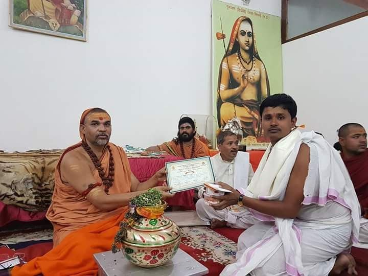

Gallery
सम्मान एवं सान्निध्य के स्मरणीय क्षण
परम पूज्य आचार्यों एवं विशिष्ट महानुभावों के सान्निध्य में प्राप्त सम्मान एवं आशीर्वाद के स्मरणीय अवसर।

उत्तराम्नाय ज्योतिषपीठाधीश्वर जगद्गुरु शंकराचार्य स्वामी श्री अविमुक्तेश्वरानंद सरस्वती जी महाराज से सम्मान ग्रहण करते हुए
<
img src="assets/images/photo2.jpg" alt="Blessing from Jagadguru Shankaracharya Swami Vidhusekhara Bharati Ji">
दक्षिणाम्नाय श्री शृंगेरी पीठाधीश्वर जगद्गुरु शंकराचार्य स्वामी विधुशेखर भारती जी महाराज से सम्मान ग्रहण करते हुए

जगद्गुरु रामानुजाचार्य विद्याभास्कर जी महाराज के सान्निध्य में
उत्तर प्रदेश सरकार के खाद्य एवं रसद मंत्री माननीय श्री मनोज कुमार पाण्डेय जी के नूतन कार्यालय के उद्घाटन पूजन अवसर पर, लखनऊ, उत्तर प्रदेश